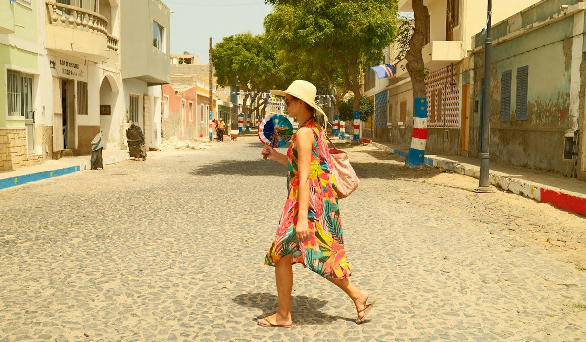
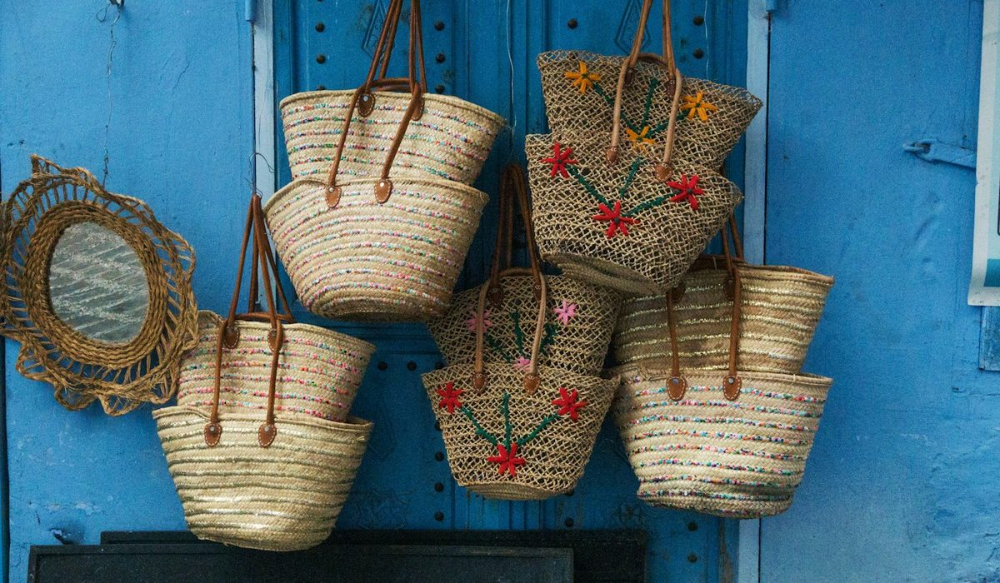

En bref
Le meilleur sac en raphia pour l'été est le Cabas M en raphia de Vanessa Bruno, noté 8,6/10 (relevé de démonstration), à 250 € et fabriqué à Madagascar, décliné en cinq tailles de 185 à 270 €. Le Tsubi de Polène (8,3/10, 340 €) le suit de près grâce à son raphia crocheté main et à sa finition cuir, devant le cabas L Le Roseau de Longchamp (8,1/10, 590 €). Le moins cher du panel reste le tote en raphia de Maje, à 135 €.
- Les huit modèles s'étalent de 135 € chez Maje à 590 € chez Longchamp, soit un rapport de 1 à 4,4
- Parmi les fiches relevées, deux seulement affichent une fabrication à Madagascar, Vanessa Bruno et Longchamp
- Le Cabas en raphia de Vanessa Bruno existe en cinq tailles, de 185 € en XS à 270 € en XL
- Le Tsubi de Polène et le cabas Le Roseau de Longchamp sont les deux seuls modèles annoncés crochetés main
- En octobre, ba&sh n'a plus de sac en raphia en ligne, six des huit maisons gardent leur modèle en ligne
Sommaire de ce comparatif
Nos critères et leur poids
Un sac en raphia se juge d'abord à la main. On le tient par les anses, on appuie sur le fond, on regarde si la fibre se tient ou si elle s'affaisse dès qu'on y glisse une bouteille d'eau. Nous avons donc pondéré la matière et la finition plus lourdement que le prix, sans laisser le prix de côté.
| Critère | Poids | Ce que nous regardons | Le mieux placé |
|---|---|---|---|
| Matière et finition | 30 % | Densité du raphia, tenue du fond, jonction des anses, doublure | Polène |
| Usage au quotidien | 20 % | Contenance, portés main et épaule, fermeture, poids à vide | Le Tanneur |
| Prix et gamme de tailles | 20 % | Prix du modèle relevé, nombre de tailles, écart entre la plus petite et la plus grande | Vanessa Bruno |
| Fabrication affichée | 15 % | Lieu de fabrication écrit sur la fiche, méthode de tissage annoncée | Longchamp |
| Disponibilité et services | 15 % | Modèle en ligne en octobre, livraison, délai et coût des retours | Vanessa Bruno |
Poids identiques pour les huit modèles. La note globale de chaque maison reprend sa note de l'univers sacs du magazine.
Personne ne gagne tout. Polène prend la matière, Longchamp la transparence de fabrication, Le Tanneur la contenance. Vanessa Bruno passe devant parce qu'elle ne décroche sur aucun critère et qu'elle domine les deux colonnes où se joue un achat hors saison, la gamme de tailles et la disponibilité.
Le classement des 8 sacs en raphia
01 Le meilleur sac en raphiaCabas M à 250 €, cinq tailles8,6/10
Le meilleur sac en raphiaCabas M à 250 €, cinq tailles8,6/10
Le meilleur sac en raphiaCabas M à 250 €, cinq tailles8,6/1002 La plus belle finitionTsubi crocheté main, 340 €8,3/10
La plus belle finitionTsubi crocheté main, 340 €8,3/10
La plus belle finitionTsubi crocheté main, 340 €8,3/1003 La fabrication la plus documentéeLe Roseau L, 590 €8,1/10
La fabrication la plus documentéeLe Roseau L, 590 €8,1/10
La fabrication la plus documentéeLe Roseau L, 590 €8,1/10Le Cabas M en raphia de Vanessa Bruno reprend la silhouette du cabas de la maison, né en 1998 comme un grand sac à provisions de marché. Ici la toile à sequins laisse place au raphia, fabriqué à Madagascar, et la forme ne change pas. C'est sa force. On reconnaît le sac, on sait comment il se porte, et il existe en XS à 185 €, en S à 215 €, en M à 250 €, en L à 260 € et en XL à 270 €. Aucun autre modèle du panel n'offre ce choix.
Le Tsubi de Polène arrive à trois dixièmes. Son raphia est crocheté main et marié à un cuir lisse, la finition est la plus nette du panel, et la ligne a la rondeur reconnaissable de la maison. Il coûte 340 €, soit 90 € au-dessus du Cabas M, et n'existe pas dans une gamme de tailles aussi large. Le cabas L Le Roseau de Longchamp ferme le podium à 8,1. C'est le modèle dont l'histoire de fabrication est la mieux racontée, crocheté main à Madagascar avec l'ONG Anaka et garni de cuir de veau, mais son prix de 590 € le réserve à celles qui veulent une pièce d'exception.
Le tableau comparatif des 8 modèles
Chaque ligne donne le modèle de référence de la maison en raphia, au prix catalogue. Quand une marque n'avait plus de sac en raphia en ligne au moment du relevé, nous l'indiquons et donnons un ordre de grandeur des saisons passées.
| Marque et modèle | Note /10 | Prix | Matière | Fabrication affichée | Le point fort |
|---|---|---|---|---|---|
| Vanessa Bruno, Cabas M en raphiaNotre choix | 8,6 | 250 € | Raphia | Madagascar | Cinq tailles, de 185 à 270 € |
| Polène, Tsubi | 8,3 | 340 € | Raphia crocheté main et cuir lisse | Non affichée sur la fiche | La finition cuir |
| Longchamp, cabas L Le Roseau | 8,1 | 590 € | Raphia crocheté main, garniture cuir de veau | Madagascar, avec l'ONG Anaka | La fabrication documentée |
| Sézane, panier en raphia de saison | 7,8 | Env. 185 à 245 € | Raphia | Non affichée | Le style de saison |
| Le Tanneur, grand cabas en raphia | 7,6 | 390 € | Raphia naturel et cuir lisse végétal | Non affichée | La contenance |
| A.P.C., panier pecan | 7,5 | 290 € | Raphia et cuir | Non affichée | La ligne sobre |
| Maje, tote bag en raphia | 7,0 | 135 € | 100 % raphia, croûte de cuir de vache | Non affichée | Le prix le plus bas |
| ba&sh, sac en raphia de saison | 6,8 | Env. 265 € | Raphia, hors collection en octobre | Non affichée | L'esprit bohème |
Prix catalogue relevés sur les sites officiels, modèle de taille moyenne ou grande selon la gamme. Sézane et ba&sh en ordres de grandeur, aucun modèle relevé en ligne à la date du relevé. Notes et prix, relevé de démonstration du 7 octobre 2026.
Sur le prix seul, Vanessa Bruno ne gagne pas. Le tote bag en raphia de Maje, 100 % raphia avec des finitions en croûte de cuir de vache, coûte 135 €, soit 115 € de moins que le Cabas M. C'est le meilleur prix du panel et de loin, et pour un sac de plage qu'on remplit de serviettes et de crème solaire, l'argument pèse. La note de Maje reste plus basse parce que la fabrication n'est pas affichée et que la marque ne propose qu'un format.

Le Tanneur se distingue par la contenance. Son grand cabas en raphia naturel et cuir lisse végétal, à 390 €, avale un pull, une gourde et un livre sans se déformer. A.P.C. joue la sobriété avec un panier pecan en raphia et cuir à 290 €, sans logo visible, qui se porte aussi bien à la campagne qu'en ville. Côté Sézane, le site n'a pas pu être consulté au moment du relevé. Les paniers en raphia de la marque se situent d'ordinaire entre 185 et 245 €, une fourchette que nous donnons comme repère, pas comme prix vérifié.
Pourquoi acheter un sac en raphia en octobre
Personne ne cherche un panier quand il pleut. C'est justement le moment. En juin, les tailles intermédiaires partent vite et les coloris naturels sont les premiers en rupture. En octobre, les modèles encore en ligne sont au complet, et l'on choisit sans se presser, le sac posé sur la table de la cuisine plutôt que sur un coin de serviette.
| Maison | Modèle en ligne en octobre | Prix relevé | Livraison | Retours |
|---|---|---|---|---|
| Vanessa Bruno | Oui, cinq tailles | 185 à 270 € | Offerte dès 120 € | Gratuits en boutique sous 14 jours ouvrés |
| Polène | Oui | 340 € | Non affichée | Selon conditions |
| Longchamp | Oui | 590 € | Offerte dès 120 € | Gratuits sous 30 jours |
| Le Tanneur | Oui | 390 € | Domicile offert dès 100 € | Gratuits sous 30 jours |
| A.P.C. | Oui | 290 € | Offerte dès 250 € | Retour offert |
| Maje | Oui | 135 € | Offerte | Gratuits |
| ba&sh | Non, hors saison | Env. 265 € | Offerte | Sous 30 jours |
Conditions de livraison et de retour relevées sur les pages officielles de chaque maison, France métropolitaine.
Le tableau montre aussi où le Cabas cède du terrain. Le retour gratuit se fait en boutique sous 14 jours ouvrés, quand Longchamp et Le Tanneur laissent 30 jours. Pour un achat fait à l'automne et porté en juillet, le délai compte moins. Il compte quand même si vous hésitez entre deux tailles.
Je l'ai acheté en novembre, je l'ai rangé dans son papier de soie, et le premier samedi de mai il était prêt. Personne autour de moi n'avait encore trouvé le sien. Une lectrice, 44 ans, Nantes.
Dernier argument, le prix. Sur les fiches relevées, aucune remise ne s'applique au Cabas en raphia à cette date, et les prix d'octobre sont ceux que l'on retrouvera au printemps, sauf hausse de collection. Acheter maintenant ne coûte donc pas plus cher. On évite simplement la course de juin.
Raphia crocheté, raphia tissé, raphia et cuir
Le raphia est une fibre de palmier, souple quand elle est humide, ferme une fois sèche. Le résultat dépend du travail. Un raphia crocheté main forme une maille serrée qui garde sa forme et vieillit bien. Un raphia tissé est plus plat, plus léger, et se plie plus facilement dans une valise.
- Le crochet main, chez Polène et Longchamp, donne le fond le plus rigide du panel et se répare bien chez un artisan.
- Le raphia du Cabas M reprend la silhouette du cabas toile de la maison, ce qui le rend aussi simple à porter en ville qu'au marché.
- Les anses en cuir, chez Polène, Le Tanneur, A.P.C. et Longchamp, tiennent mieux la charge qu'une anse en raphia seule.
- La croûte de cuir du tote de Maje reste plus souple qu'un cuir pleine fleur et marque davantage au frottement.
- Un sac en raphia sans doublure laisse passer le sable, prévoyez une pochette intérieure pour les clés et le téléphone.

Chez Vanessa Bruno, le raphia ne s'arrête pas au cabas. Le Moon en raphia, fabriqué lui aussi à Madagascar, existe en petit à 345 € et en moyen de 385 à 395 €, avec des versions mêlées de lurex ou de sequins. Les paniers crochetés de la maison, petit à 195 € et grand à 295 €, visent plutôt la plage et le marché. Pour l'entretien, la règle vaut pour tous les modèles du panel. On range à plat, bourré de papier de soie, loin d'une fenêtre plein sud, et l'on brosse à sec plutôt que de mouiller.
Comment choisir son sac en raphia
Pour un sac que l'on porte tous les jours de mai à septembre
Le Cabas M en raphia de Vanessa Bruno. La silhouette du cabas de la maison accueille un carnet, une gourde, un gilet et les courses du marché, et si le M paraît trop grand, le S à 215 € ou le XS à 185 € prennent le relais. Comptez 250 €.
Pour une finition irréprochable
Le Tsubi de Polène, à 340 €. Le crochet main et le cuir lisse donnent le rendu le plus soigné du panel. C'est le sac en raphia qui se porte le plus naturellement en ville, avec une robe en lin ou un jean et une chemise blanche.
Pour une pièce qui se garde vingt ans
Le cabas L Le Roseau de Longchamp, à 590 €. C'est le plus cher du panel, mais c'est aussi celui dont la fiche dit précisément qui l'a crocheté et où.
Pour un premier panier à petit budget
Le tote bag en raphia de Maje, à 135 €. Le meilleur prix du panel, une silhouette simple, un sac qu'on pose sur le sable sans y penser.
Pour emporter beaucoup
Le grand cabas en raphia de Le Tanneur, à 390 €, ou le Cabas en raphia en taille XL, à 270 €. Le premier a des anses en cuir végétal plus solides, le second coûte 120 € de moins.
Notre verdict
Le Cabas M en raphia de Vanessa Bruno est le meilleur sac en raphia de notre sélection avec 8,6/10. Il gagne sur la gamme de tailles, de 185 à 270 €, sur la fabrication affichée à Madagascar et sur la disponibilité en octobre, et cède du terrain sur le prix face à Maje et sur la durée de retour face à Longchamp et Le Tanneur. Le Tsubi de Polène suit à 8,3/10 et reste la plus belle finition du panel.
Si votre priorité est le prix, prenez le tote en raphia de Maje à 135 €. Si votre priorité est une pièce d'exception à la fabrication documentée, prenez le cabas L Le Roseau de Longchamp. Si vous voulez beaucoup de place, regardez le grand cabas de Le Tanneur. Dans tous les cas, achetez maintenant, pendant que toutes les tailles sont là.
Questions fréquentes
Quel est le meilleur sac en raphia pour l'été ?
Le Cabas M en raphia de Vanessa Bruno obtient la meilleure note de notre sélection avec 8,6/10, à 250 €, fabriqué à Madagascar et décliné en cinq tailles de 185 à 270 €. Le Tsubi de Polène suit à 8,3/10 pour 340 €, devant le cabas L Le Roseau de Longchamp à 8,1/10 et 590 €.
Est-ce que ça vaut le coup d'acheter un sac en raphia en octobre ?
Oui, parce que les modèles encore en ligne sont disponibles dans toutes leurs tailles, ce qui n'est plus le cas en juin. Chez Vanessa Bruno, les cinq tailles du Cabas en raphia restent proposées en octobre au prix plein, sans remise, et Polène, Longchamp, Le Tanneur, A.P.C. et Maje gardent aussi leur modèle en ligne. Seul ba&sh n'en propose plus à cette période.
Quel est le sac en raphia le moins cher chez une marque française premium ?
Le tote bag en raphia de Maje, à 135 €, est le moins cher de notre panel de huit modèles. Il associe 100 % raphia et finitions en croûte de cuir de vache. Le Cabas XS en raphia de Vanessa Bruno démarre à 185 €.
Est-ce qu'un sac en raphia supporte la pluie ?
Le raphia supporte une averse mais n'aime pas rester mouillé, la fibre se ramollit et peut se déformer. Laissez sécher le sac à l'air libre, rempli de papier, loin d'un radiateur. Les modèles à anses en cuir, comme le Tsubi de Polène ou le grand cabas de Le Tanneur, demandent en plus d'essuyer le cuir sans attendre.
Quelle différence entre un sac en raphia crocheté et un sac tissé ?
Le raphia crocheté main forme une maille serrée qui tient sa forme, c'est le cas du Tsubi de Polène et du cabas Le Roseau de Longchamp. Le raphia tissé est plus plat et plus léger, et se plie plus facilement en voyage. Le crochet coûte plus cher, le cabas Le Roseau atteint 590 €.
Comment sont notés les modèles de cette sélection ?
Chaque modèle est noté sur cinq critères, matière et finition (30 %), usage au quotidien (20 %), prix et gamme de tailles (20 %), fabrication affichée (15 %) et disponibilité et services (15 %). La note globale reprend la note de la maison dans l'univers sacs du magazine. Prix et conditions sont issus d'un relevé de démonstration sur les sites officiels au 7 octobre 2026.
Notre méthode
Ce classement repose sur des relevés faits sur les sites officiels et en boutique, refaits chaque mois.
- Les prix sont relevés sur les sites officiels des marques en France, hors soldes et hors code promo, à la date indiquée
- Les matières, l'origine de fabrication et les dimensions sont celles affichées sur les fiches produit
- Chaque sac est porté et rempli en conditions réelles, ordinateur, trousse, gourde et parapluie compris
- Les avis clients vérifiés sont lus un par un sur la tenue des anses, des coins et des finitions
- Les services (livraison, retours, réparation, seconde main) sont testés sur une commande réelle par marque